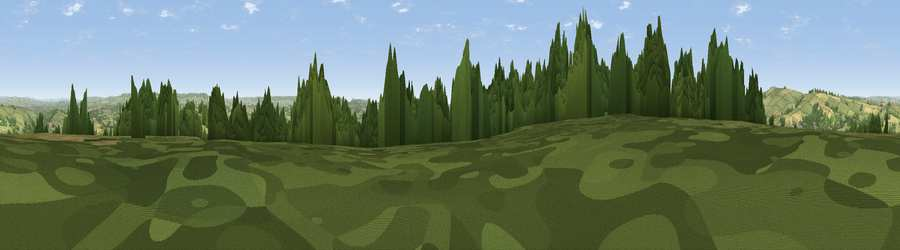

Viewpoint near Clyst St. Lawrence
#16804 in England · top 24% of its area beats it · near Clyst St. LawrenceWhere it is
The exact computed spot (ST 00825 01575). Click the marker for map links.
The view, rendered

A 360° render of this exact spot computed from the terrain model, tree cover and land cover — summer colours, afternoon light, calibrated against photographs of famous viewpoints. Real trees, hedges and buildings will differ in detail.
The panorama
Grey silhouette: terrain skyline in each direction (720 bearings, Earth curvature and refraction included). Dashed green: skyline with trees (+15 m) and buildings (+8 m) as obstacles. Blue strip: how far the ground is visible on each bearing.
Where the view opens
Wedge length = distance to the farthest visible ground on that bearing (vegetation-aware). Rings at 10, 25 and 50 km.
What fills the view
56% grassland · 24% woodland · 19% cropland · 2% built-up
Angular shares of the visible panorama (visual magnitude), not map area. Landscape diversity 0.47 (0–1 Shannon).
Key numbers
More beautiful places nearby
The staircase of upgrades: each row has a higher view potential than everything closer. Driving times are estimates from straight-line distance, calibrated against real road routing — check an actual route before setting out.
| Place | Direction | Drive | Score |
|---|---|---|---|
| Viewpoint near Clyst Hydon | ENE · 1 km | ~3 min | 59.3 |
| Viewpoint near Bradninch | NW · 3 km | ~8 min | 72.5 |
| Viewpoint near Bradninch | NW · 4 km | ~10 min | 77.7 |
| Raddon Hills | W · 11 km | ~21 min | 78.2 |
| Viewpoint near Stockleigh Pomeroy | W · 11 km | ~21 min | 78.9 |
| Viewpoint near Tipton St John | SE · 15 km | ~26 min | 81.5 |
| Viewpoint near Colaton Raleigh | SSE · 17 km | ~30 min | 82.1 |
| Viewpoint near Sidmouth | SE · 18 km | ~31 min | 83.0 |
50.80521, -3.40883 · source: screening · position refined by local search. Computed location — check access rights before visiting.